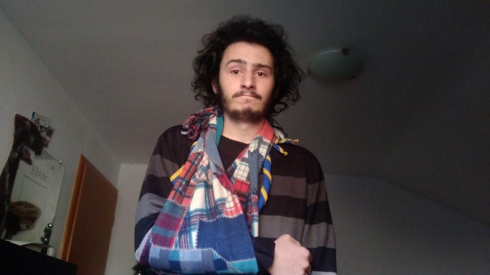

Tale naloga je divja. Vzameš svojo roko (al pa roko kkšne svoje sestre). Vzameš svojo rutko (ali kššno podobno ruto al neki). In imobiliziraš roko. Potem to fotografiraš in shraniš.
Zdej pa, najbrž vas zanima kaj s temi slikcami. Zdej boste poslal en mejl. In pazite, ker da je mejl veljaven, morjo bit upoštevani naslednji kriteriji:
Če bo vse v redu, dobite v odgovoru na vaš mail geslo do naslednje naloge. Če ne bo vse v redu, dobite informacijo, da nekaj ne štima.